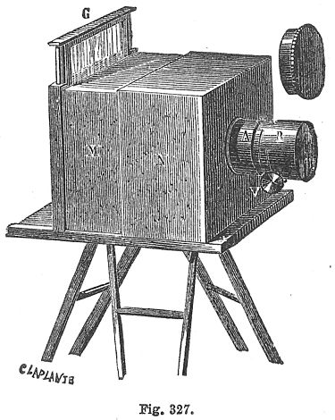

Фотографією (світли́ною) називають також результат фотографічного процесу — фотографічний твір, зображення, електронне або отримане на певному матеріалі, здебільшого на цупкому папері. Колекції фотографій називають фотоальбомами. Для відтворення електронного зображення потрібне устаткування на зразок комп'ютера з монітором або проєктором.
Назву «фотографія» було обрано як наймилозвучнішу з декількох варіантів у Французькій академії 1839 року.
Альберт Магнус виявив нітрат срібла який пізніше буде використовуватися як світлочутливий матеріал в фотоемульсії на плівці.
Георг Фабріціус (1516–71) виявив хлорид срібла що став основою виробництва фотопаперу.